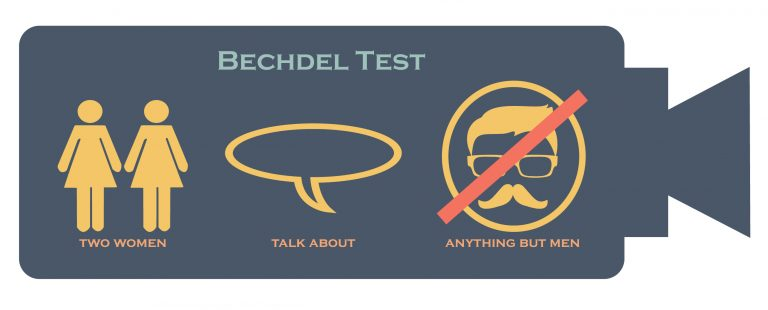
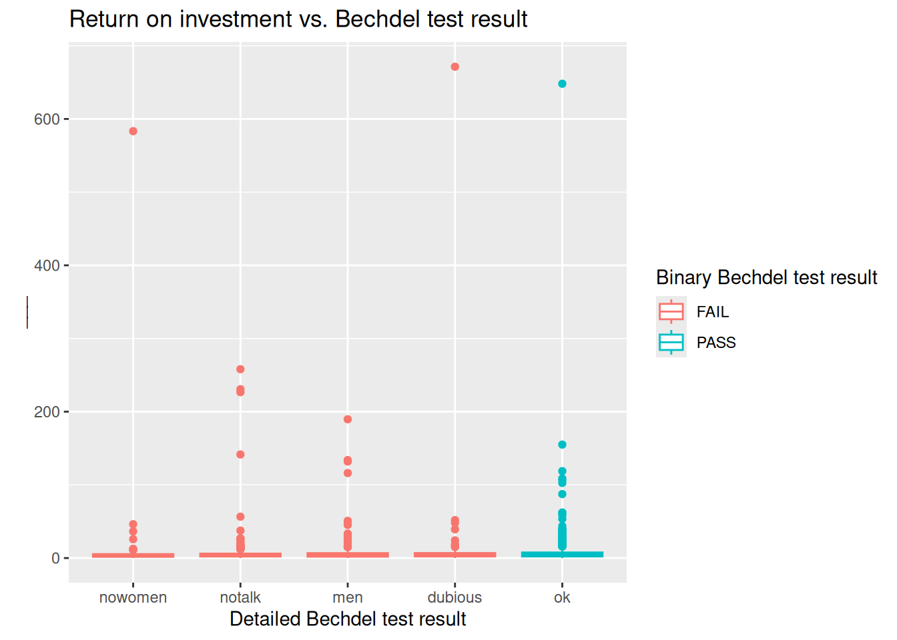
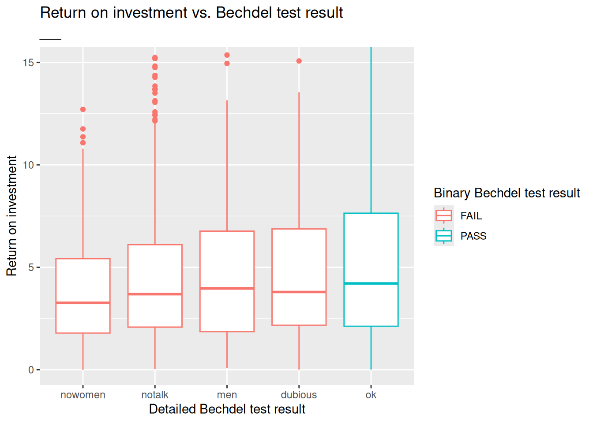

install.packages("fivethirtyeight")
library(fivethirtyeight)
library(tidyverse)Praktikum 01b - Quarto: Bechdel
Der Bechdel-Test fragt, ob in einem Film mindestens zwei Frauen zu sehen sind, die über alles andere als einen Mann miteinander reden. Um den Test zu bestehen, muss ein Film drei Grundvoraussetzungen erfüllen:
- Es gibt mindestens zwei Frauenrollen
- Sie sprechen miteinander
- Sie unterhalten sich über etwas anderes als einen Mann.

In dieser Minianalyse arbeiten wir mit den Daten, die in der FiveThirtyEight-Geschichte mit dem Titel “The Dollar-And-Cents Case Against Hollywood’s Exclusion of Women” benutzt wurden.
Eure Aufgaben
Bericht erstellen:
Clicke auf den
RenderKnopf oben,oder
Ctrl + Shift + K
die
___Lücken ausfüllen.
Daten und Packages
Wir beginnen mit dem Laden der Packages, die wir verwenden werden.
Der Datensatz enthält Informationen zu 1794 Filme, die zwischen 1970 und 2013 veröffentlicht wurden.
Wir konzentrieren unsere Analyse jedoch auf Filme, die zwischen 1990 und 2013 veröffentlicht wurden.
bechdel90_13 <- bechdel |>
filter(between(year, 1990, 2013))Es gibt ___ solche Filme.
glimpse(bechdel90_13)Rows: 1,615
Columns: 15
$ year <int> 2013, 2012, 2013, 2013, 2013, 2013, 2013, 2013, 2013, 20…
$ imdb <chr> "tt1711425", "tt1343727", "tt2024544", "tt1272878", "tt0…
$ title <chr> "21 & Over", "Dredd 3D", "12 Years a Slave", "2 Guns", "…
$ test <chr> "notalk", "ok-disagree", "notalk-disagree", "notalk", "m…
$ clean_test <ord> notalk, ok, notalk, notalk, men, men, notalk, ok, ok, no…
$ binary <chr> "FAIL", "PASS", "FAIL", "FAIL", "FAIL", "FAIL", "FAIL", …
$ budget <int> 13000000, 45000000, 20000000, 61000000, 40000000, 225000…
$ domgross <dbl> 25682380, 13414714, 53107035, 75612460, 95020213, 383624…
$ intgross <dbl> 42195766, 40868994, 158607035, 132493015, 95020213, 1458…
$ code <chr> "2013FAIL", "2012PASS", "2013FAIL", "2013FAIL", "2013FAI…
$ budget_2013 <int> 13000000, 45658735, 20000000, 61000000, 40000000, 225000…
$ domgross_2013 <dbl> 25682380, 13611086, 53107035, 75612460, 95020213, 383624…
$ intgross_2013 <dbl> 42195766, 41467257, 158607035, 132493015, 95020213, 1458…
$ period_code <int> 1, 1, 1, 1, 1, 1, 1, 1, 1, 1, 1, 1, 1, 1, 1, 1, 1, 1, 1,…
$ decade_code <int> 1, 1, 1, 1, 1, 1, 1, 1, 1, 1, 1, 1, 1, 1, 1, 1, 1, 1, 1,…Die finanziellen Variablen, auf die wir uns konzentrieren werden, sind die folgenden:
budget_2013: Budget in inflationsbereinigten Dollar für 2013domgross_2013: Inlandsbrutto (USA) in inflationsbereinigten Dollar für 2013intgross_2013: Gesamtes internationales Brutto in 2013 inflationsbereinigten Dollar
Und wir werden auch die Variable binary und clean_test für die Gruppierung verwenden.
Analyse
Wie varieren die median Budget und Brutto, je nachdem, ob der Film den Bechdel-Test bestanden hat? (Info in der binary Variable)
bechdel90_13 |>
group_by(binary) |>
summarise(
med_budget = median(budget_2013),
med_domgross = median(domgross_2013, na.rm = TRUE),
med_intgross = median(intgross_2013, na.rm = TRUE)
)# A tibble: 2 × 4
binary med_budget med_domgross med_intgross
<chr> <dbl> <dbl> <dbl>
1 FAIL 48385984. 57318606. 104475669
2 PASS 31070724 45330446. 80124349Schauen wir uns als Nächstes an, wie sich die median Budget and Brutto anhand eines detaillierteren Indikators des Bechdel-Testergebnisses unterscheiden (clean_test):
ok= besteht den Testdubious= zweifelhaftmen= Frauen reden nur über Männernotalk= Frauen reden nicht miteinandernowomen= weniger als zwei Frauen
bechdel90_13 |>
# group_by(___) |>
summarise(
med_budget = median(budget_2013),
med_domgross = median(domgross_2013, na.rm = TRUE),
med_intgross = median(intgross_2013, na.rm = TRUE)
)# A tibble: 1 × 3
med_budget med_domgross med_intgross
<int> <dbl> <dbl>
1 37878971 52270207 93523336Um zu bewerten, wie sich die Kapitalrendite (return on investment) zwischen Filmen, die den Bechdel-Test bestehen und nicht bestehen, unterscheidet, erstellen wir zunächst eine neue Variable namens roi als Verhältnis von Brutto zu Budget.
bechdel90_13 <- bechdel90_13 |>
mutate(roi = (intgross_2013 + domgross_2013) / budget_2013)Welche Filme haben die höchste Kapitalrendite?
bechdel90_13 |>
arrange(desc(roi)) |>
select(title, roi, year)# A tibble: 1,615 × 3
title roi year
<chr> <dbl> <int>
1 Paranormal Activity 671. 2007
2 The Blair Witch Project 648. 1999
3 El Mariachi 583. 1992
4 Clerks. 258. 1994
5 In the Company of Men 231. 1997
6 Napoleon Dynamite 227. 2004
7 Once 190. 2006
8 The Devil Inside 155. 2012
9 Primer 142. 2004
10 Fireproof 134. 2008
# ℹ 1,605 more rowsHier ist eine Visualisierung der Kapitalrendite nach Testergebnis. Aufgrund einiger extremer Beobachtungen ist es jedoch schwierig, die Verteilungen zu erkennen.
ggplot(data = bechdel90_13,
mapping = aes(x = clean_test, y = roi, color = binary)) +
geom_boxplot() +
labs(
title = "Return on investment vs. Bechdel test result",
x = "Detailed Bechdel test result",
y = "___",
color = "Binary Bechdel test result"
)
Was sind das für Filme mit sehr hoher Kapitalrendite?
bechdel90_13 |>
filter(roi > 400) |>
select(title, budget_2013, domgross_2013, year)# A tibble: 3 × 4
title budget_2013 domgross_2013 year
<chr> <int> <dbl> <int>
1 Paranormal Activity 505595 121251476 2007
2 The Blair Witch Project 839077 196538593 1999
3 El Mariachi 11622 3388636 1992Wenn wir die Filme mit roi < ___ vergrössern, erhalten wir einen besseren Überblick über den Vergleich der Mediane zwischen den Kategorien:
ggplot(data = bechdel90_13, mapping = aes(x = clean_test, y = roi, color = binary)) +
geom_boxplot() +
labs(
title = "Return on investment vs. Bechdel test result",
subtitle = "___", # Etwas über das Vergrössern auf eine bestimmte Ebene
x = "Detailed Bechdel test result",
y = "Return on investment",
color = "Binary Bechdel test result"
) +
coord_cartesian(ylim = c(0, 15))
Appendix: R Code-Chunk
Füge einen eigenen Code-chunk hinzu:
Tastatur-Abkürzung:
Ctrl + Shift + IAdd Chunk
 oben rechts
oben rechtsoder
```{r}```eintippen
Führe den Code aus:
zeilenweise mit
Ctrl + Enterden gesamten Code mit der grünen Play-Taste
wähle eine Option im
Run-Menu oben rechts